Gene set enrichment analysis
Gene Set Enrichment Analysis (GSEA) is a computational method that determines whether a pre-defined set of genes (e.g. those belonging to a specific GO term or KEGG pathway) shows statistically significant, concordant differences between two biological states.
GSEA differs from over-representation analysis: rather than testing whether a subset of significant genes is enriched for a category, GSEA walks the entire ranked gene list (typically ranked by log2 fold-change) and asks whether members of each gene set tend to cluster at the top or bottom. This means you do not have to pick a significance cut-off in advance.
This page describes the implementation of GSEA using the
clusterProfiler package, run downstream of a differential
expression analysis (e.g. with DESeq2).
Full clusterProfiler documentation:
clusterProfiler vignette.
Note
An R Markdown notebook covering this workflow is available at gencorefacility/r-notebooks/gsea.Rmd.
Workflow overview
Load
clusterProfiler,enrichplot,ggplot2and the organism-specific annotation database.Read the differential-expression results and build a sorted, named vector of log2 fold-changes (the ranked gene list).
Run
gseGOto test for GO-term enrichment in the ranked list.Visualize the GO results (dotplot, enrichment map, category netplot, ridgeplot, GSEA plot, PubMed trend).
Convert gene IDs and run
gseKEGGfor KEGG pathway enrichment.Visualize the KEGG results and render an enriched pathway with
pathview.
Environment
This is an R workflow. Install clusterProfiler, pathview and
enrichplot once, then load them at the start of each session. We
also use ggplot2 to add x-axis labels on some plots (e.g.
ridgeplot).
BiocManager::install("clusterProfiler", version = "3.8")
BiocManager::install("pathview")
BiocManager::install("enrichplot")
library(clusterProfiler)
library(enrichplot)
# we use ggplot2 to add x axis labels (ex: ridgeplot)
library(ggplot2)
Inputs
You need:
A differential expression results CSV containing a list of gene names and log2 fold-change values. This data is typically produced by a differential expression analysis tool such as DESeq2. In the examples below the file is
drosphila_example_de.csv.An organism annotation database matched to the gene IDs in that CSV. The examples here use D. melanogaster and
org.Dm.eg.db.
Annotation database
Install and load the annotation package for your organism. See the full list at Bioconductor OrgDb packages (there are 19 presently available).
# SET THE DESIRED ORGANISM HERE
organism = "org.Dm.eg.db"
BiocManager::install(organism, character.only = TRUE)
library(organism, character.only = TRUE)
Prepare input
Read the DESeq2 output and build a named, sorted vector of log2
fold-changes. clusterProfiler requires the list to be sorted in
decreasing order.
# reading in data from deseq2
df = read.csv("drosphila_example_de.csv", header=TRUE)
# we want the log2 fold change
original_gene_list <- df$log2FoldChange
# name the vector
names(original_gene_list) <- df$X
# omit any NA values
gene_list <- na.omit(original_gene_list)
# sort the list in decreasing order (required for clusterProfiler)
gene_list = sort(gene_list, decreasing = TRUE)
GO gene set enrichment
Run gseGO against the ranked gene list and the chosen ontology.
Parameters
keyType This is the source of the annotation (gene IDs). The options vary for each annotation. In the example of org.Dm.eg.db, the options are:
"ACCNUM""ALIAS""ENSEMBL""ENSEMBLPROT""ENSEMBLTRANS""ENTREZID""ENZYME""EVIDENCE""EVIDENCEALL""FLYBASE""FLYBASECG""FLYBASEPROT""GENENAME""GO""GOALL""MAP""ONTOLOGY""ONTOLOGYALL""PATH""PMID""REFSEQ""SYMBOL""UNIGENE""UNIPROT"
Check which options are available with the keytypes command, for
example keytypes(org.Dm.eg.db).
ont one of "BP", "MF", "CC" or "ALL".
nPerm the higher the number of permutations you set, the more accurate your result will be, but the longer the analysis will take.
minGSSize minimum number of genes in set. Gene sets with fewer than this many genes in your dataset will be ignored.
maxGSSize maximum number of genes in set. Gene sets with more than this many genes in your dataset will be ignored.
pvalueCutoff p-value cutoff.
pAdjustMethod one of "holm", "hochberg", "hommel",
"bonferroni", "BH", "BY", "fdr", "none".
Create the gseGO object
gse <- gseGO(geneList = gene_list,
ont = "ALL",
keyType = "ENSEMBL",
nPerm = 10000,
minGSSize = 3,
maxGSSize = 800,
pvalueCutoff = 0.05,
verbose = TRUE,
OrgDb = organism,
pAdjustMethod = "none")
Visualizations
Dotplot
require(DOSE)
dotplot(gse, showCategory = 10, split = ".sign") + facet_grid(. ~ .sign)
{kind=link}
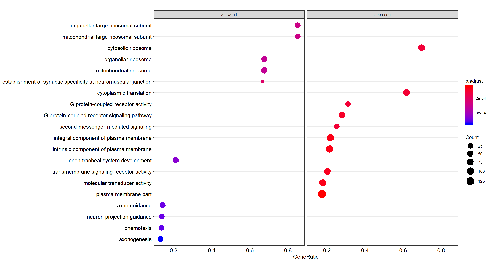
Top 10 enriched GO terms, faceted by whether the gene set is activated or suppressed in the ranking.
Enrichment map
Enrichment map organizes enriched terms into a network with edges connecting overlapping gene sets. Mutually overlapping gene sets tend to cluster together, making it easy to identify functional modules.
emapplot(gse, showCategory = 10)
{kind=link}
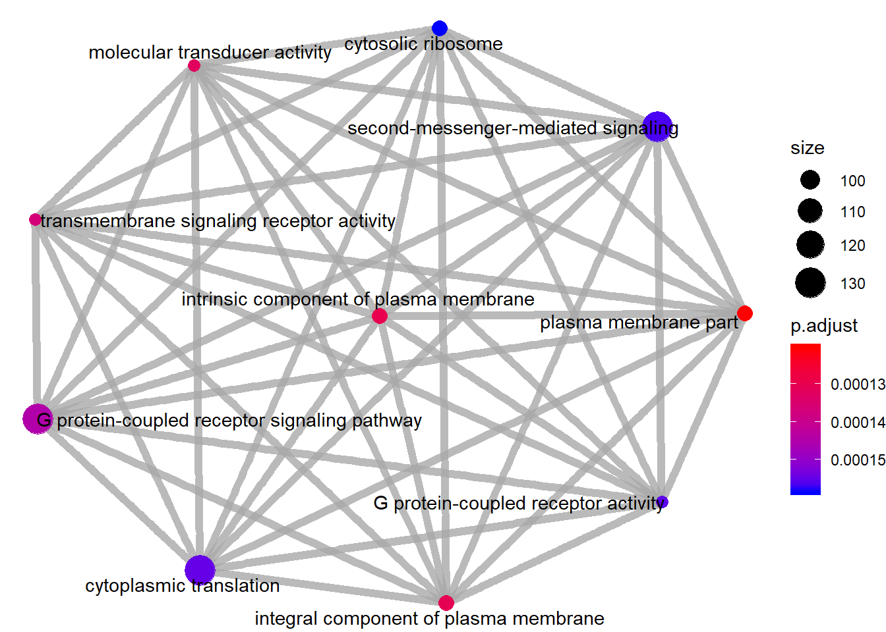
Enrichment map of GO-term GSEA: nodes are terms, edges connect terms that share genes.
Category netplot
The cnetplot depicts the linkages of genes and biological concepts
(e.g. GO terms or KEGG pathways) as a network. It is helpful for
seeing which genes are involved in enriched pathways and which genes
belong to multiple annotation categories.
# categorySize can be either 'pvalue' or 'geneNum'
cnetplot(gse, categorySize = "pvalue", foldChange = gene_list, showCategory = 3)
{kind=link}
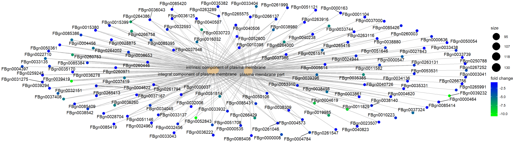
Category netplot for the top 3 enriched GO terms, with gene fold-change overlaid as colour.
Ridgeplot
Grouped by gene set, density plots are generated by using the frequency of fold-change values per gene within each set. Helpful to interpret up- and down-regulated pathways.
ridgeplot(gse) + labs(x = "enrichment distribution")
{kind=link}
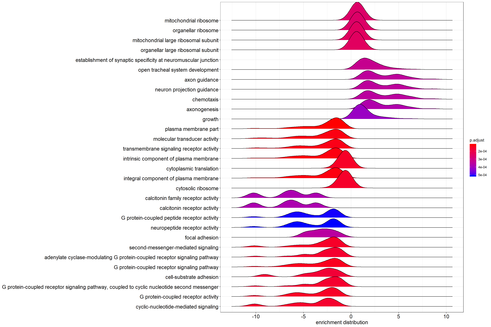
Ridgeplot: per-gene-set density of log2 fold-change values across the genes in each set.
GSEA plot
Plot of the Running Enrichment Score (green line) for a gene set as the analysis walks down the ranked gene list, including the location of the maximum enrichment score (the red line). The black lines in the Running Enrichment Score show where the members of the gene set appear in the ranked list of genes, indicating the leading edge subset.
The Ranked list metric shows the value of the ranking metric (log2 fold-change) as you move down the list of ranked genes. The ranking metric measures a gene’s correlation with a phenotype.
Gene Set Integer. Corresponds to gene set in the gse object.
The first gene set is 1, second gene set is 2, etc.
# Use the `Gene Set` param for the index in the title, and as the
# value for geneSetId
gseaplot(gse, by = "all", title = gse$Description[1], geneSetID = 1)
{kind=link}
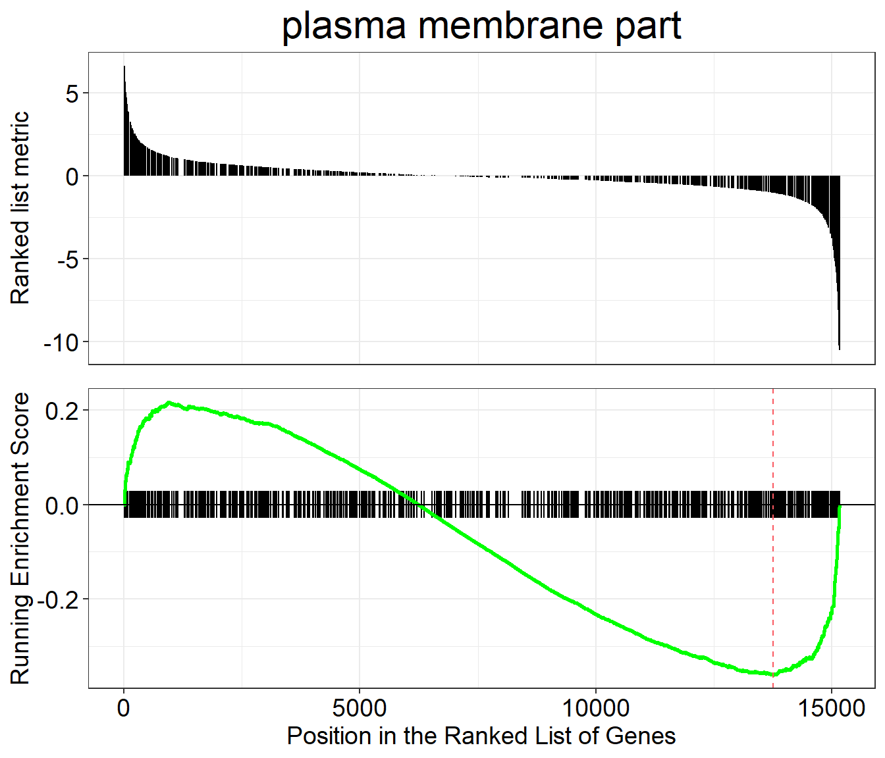
Classic GSEA plot for the first enriched GO gene set: running enrichment score, leading-edge ticks, and ranking metric.
PubMed trend of enriched terms
Plots the number or proportion of publications trend based on the query result from PubMed Central.
terms <- gse$Description[1:3]
pmcplot(terms, 2010:2018, proportion = FALSE)
{kind=link}
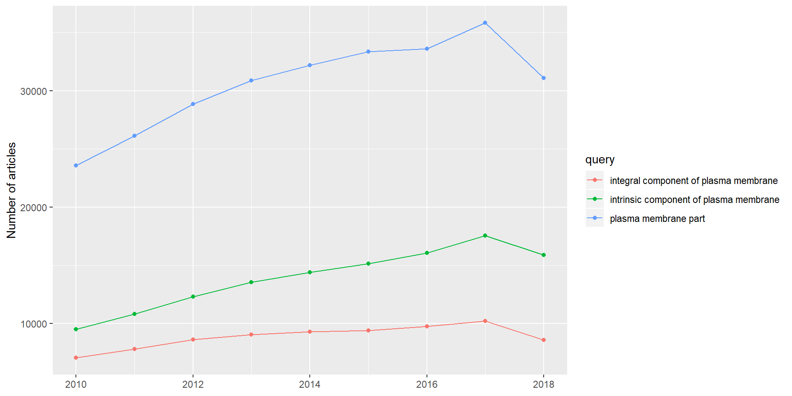
PubMed Central publication counts (2010 to 2018) for the top three enriched GO terms.
KEGG gene set enrichment
For KEGG pathway enrichment we use the gseKEGG function. KEGG
requires its own identifier types, so we first convert gene IDs with
bitr (included in clusterProfiler). It is normal for this call
to produce some messages or warnings.
In the bitr function, the param fromType should be the same as
the keyType we used for gseGO above (the annotation source).
This param is used again in the next two steps: creating dedup_ids
and df2.
toType in the bitr function has to be one of the available
options from keyTypes(org.Dm.eg.db) and must map to one of
'kegg', 'ncbi-geneid', 'ncib-proteinid' or 'uniprot',
because gseKEGG only accepts one of those four options as its
keytype parameter. In the case of org.Dm.eg.db, none of those
four types are available directly, but 'ENTREZID' is the same as
'ncbi-geneid' for org.Dm.eg.db, so we use 'ENTREZID' for
toType.
As our initial input, we use original_gene_list created above.
Prepare input
# Convert gene IDs for gseKEGG function
# We will lose some genes here because not all IDs will be converted
ids <- bitr(names(original_gene_list), fromType = "ENSEMBL",
toType = "ENTREZID", OrgDb = organism)
# remove duplicate IDS (here I use "ENSEMBL", but it should be
# whatever was selected as keyType)
dedup_ids = ids[!duplicated(ids[c("ENSEMBL")]),]
# Create a new dataframe df2 which has only the genes which were
# successfully mapped using the bitr function above
df2 = df[df$X %in% dedup_ids$ENSEMBL,]
# Create a new column in df2 with the corresponding ENTREZ IDs
df2$Y = dedup_ids$ENTREZID
# Create a vector of the gene universe
kegg_gene_list <- df2$log2FoldChange
# Name vector with ENTREZ ids
names(kegg_gene_list) <- df2$Y
# omit any NA values
kegg_gene_list <- na.omit(kegg_gene_list)
# sort the list in decreasing order (required for clusterProfiler)
kegg_gene_list = sort(kegg_gene_list, decreasing = TRUE)
Parameters
organism KEGG organism code. The full list is here:
KEGG organism list
(need the 3-letter code). We define it as kegg_organism first,
because it is used again below when making the pathview plots.
nPerm the higher the number of permutations you set, the more accurate your result will be, but the longer the analysis will take.
minGSSize minimum number of genes in set. Gene sets with fewer than this many genes in your dataset will be ignored.
maxGSSize maximum number of genes in set. Gene sets with more than this many genes in your dataset will be ignored.
pvalueCutoff p-value cutoff.
pAdjustMethod one of "holm", "hochberg", "hommel",
"bonferroni", "BH", "BY", "fdr", "none".
keyType one of 'kegg', 'ncbi-geneid', 'ncib-proteinid'
or 'uniprot'.
Create the gseKEGG object
kegg_organism = "dme"
kk2 <- gseKEGG(geneList = kegg_gene_list,
organism = kegg_organism,
nPerm = 10000,
minGSSize = 3,
maxGSSize = 800,
pvalueCutoff = 0.05,
pAdjustMethod = "none",
keyType = "ncbi-geneid")
Visualizations
Dotplot
dotplot(kk2, showCategory = 10, title = "Enriched Pathways",
split = ".sign") + facet_grid(. ~ .sign)
{kind=link}
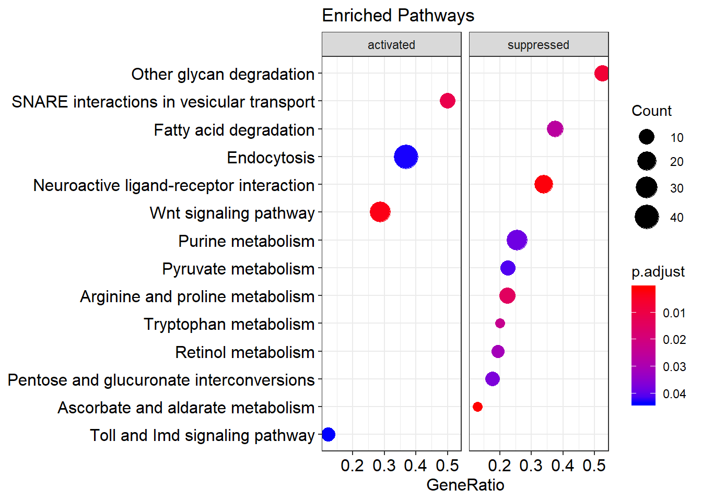
Top 10 enriched KEGG pathways, faceted by whether the pathway is activated or suppressed in the ranking.
Enrichment map
Enrichment map organizes enriched terms into a network with edges connecting overlapping gene sets. Mutually overlapping gene sets tend to cluster together, making it easy to identify functional modules.
emapplot(kk2)
{kind=link}
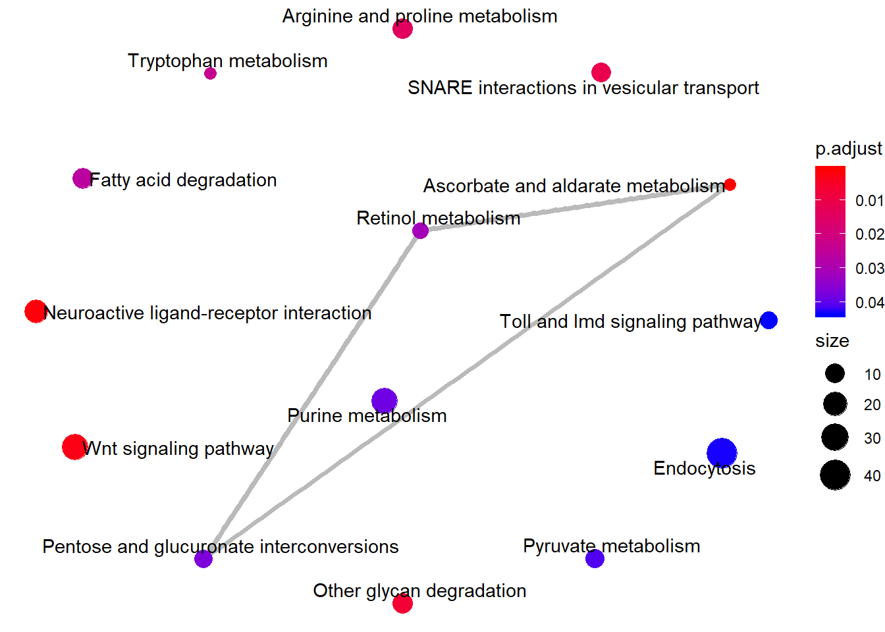
Enrichment map of KEGG-pathway GSEA.
Category netplot
The cnetplot depicts the linkages of genes and biological concepts
(here KEGG pathways) as a network.
# categorySize can be either 'pvalue' or 'geneNum'
cnetplot(kk2, categorySize = "pvalue", foldChange = gene_list)
{kind=link}
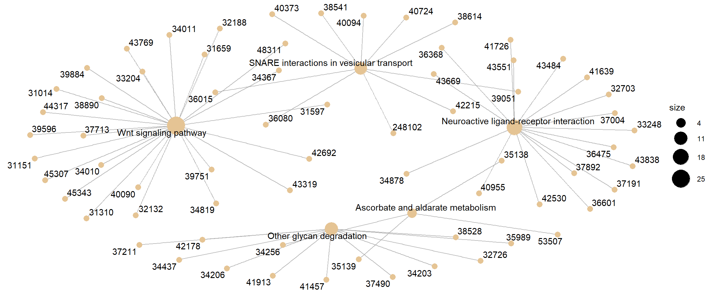
Category netplot for KEGG pathway GSEA, with gene fold-change overlaid as colour.
Ridgeplot
Helpful to interpret up- and down-regulated pathways.
ridgeplot(kk2) + labs(x = "enrichment distribution")
{kind=link}
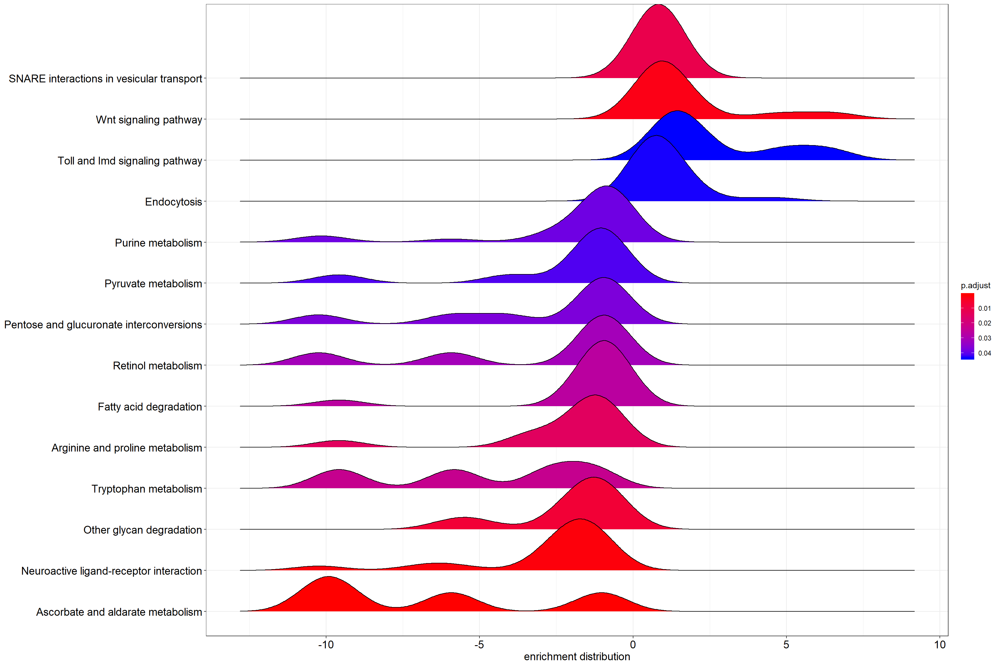
Per-pathway density of log2 fold-change values across the genes in each KEGG set.
GSEA plot
Traditional method for visualizing a GSEA result.
Gene Set Integer. Corresponds to gene set in the gse object.
The first gene set is 1, second gene set is 2, etc. Default: 1.
# Use the `Gene Set` param for the index in the title, and as the
# value for geneSetId
gseaplot(kk2, by = "all", title = kk2$Description[1], geneSetID = 1)
{kind=link}
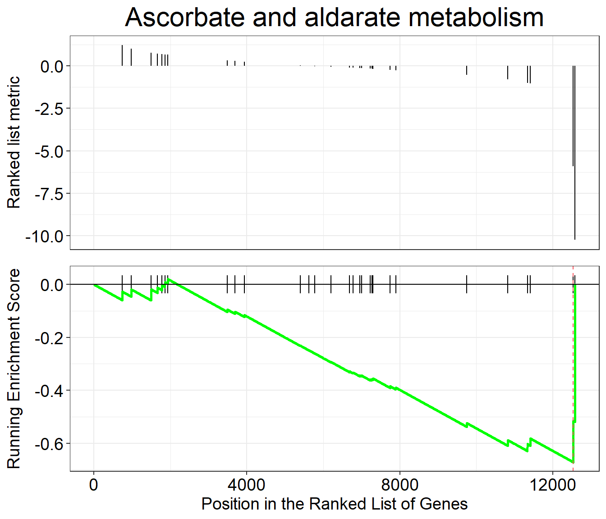
Classic GSEA plot for the first enriched KEGG pathway.
Pathview
pathview renders an enriched KEGG pathway with your DE genes
overlaid, producing a PNG and a (different) PDF of the pathway map.
Parameters
gene.data The named vector kegg_gene_list created above.
pathway.id The user needs to enter this. Enriched pathways plus
the pathway ID are provided in the gseKEGG output table above.
species Same as organism above in gseKEGG, which we
defined as kegg_organism.
library(pathview)
# Produce the native KEGG plot (PNG)
dme <- pathview(gene.data = kegg_gene_list, pathway.id = "dme04130",
species = kegg_organism)
# Produce a different plot (PDF) (not displayed here)
dme <- pathview(gene.data = kegg_gene_list, pathway.id = "dme04130",
species = kegg_organism, kegg.native = F)
knitr::include_graphics("dme04130.pathview.png")
{kind=link}
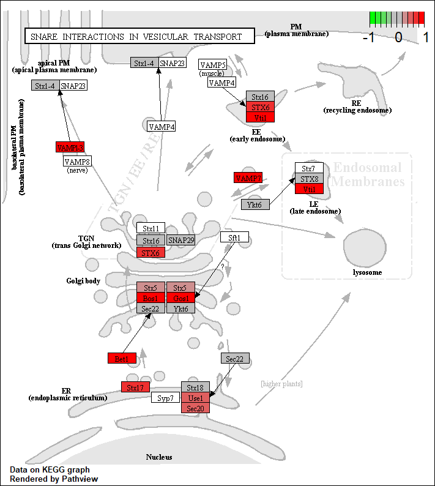
KEGG native enriched pathway plot (dme04130) with gene
fold-change overlaid on pathway nodes.